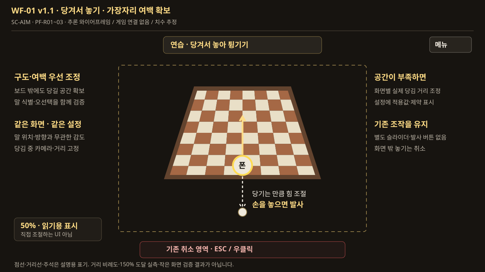
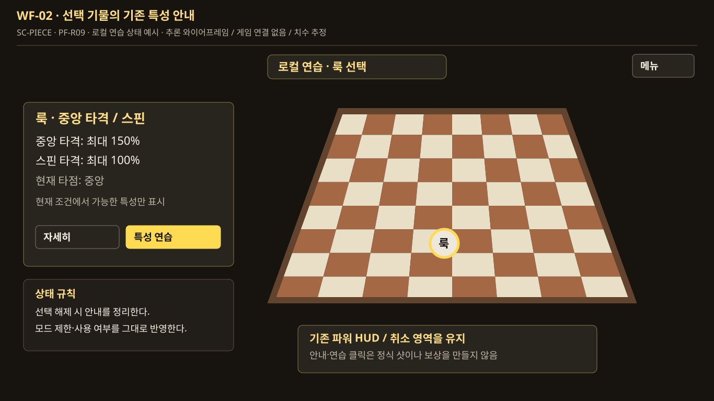
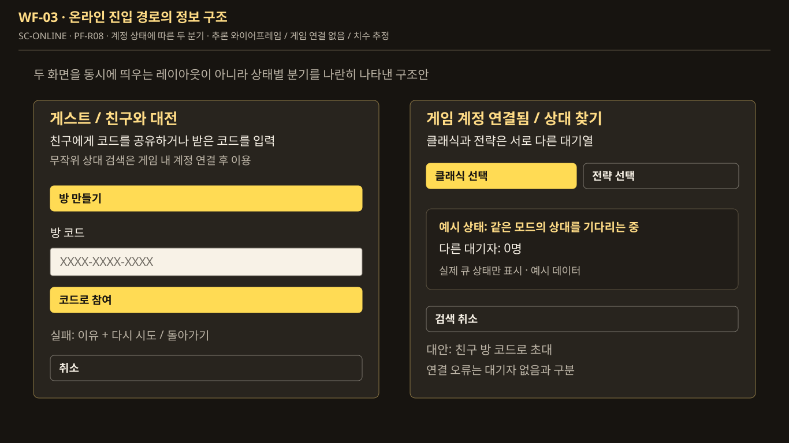
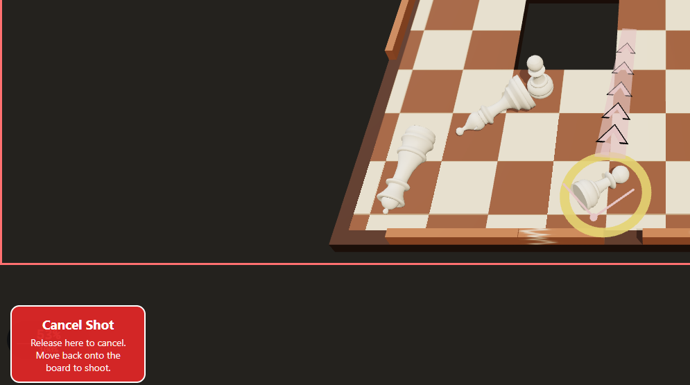
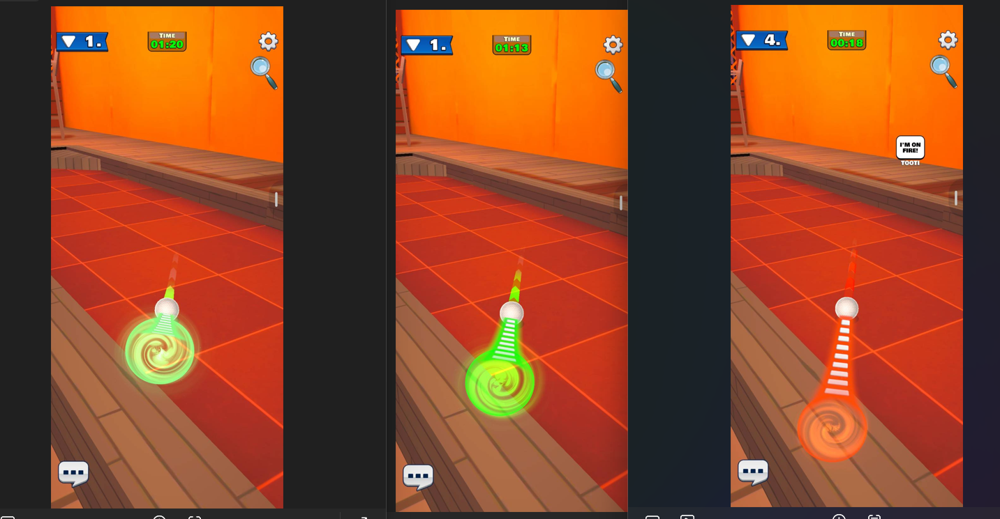
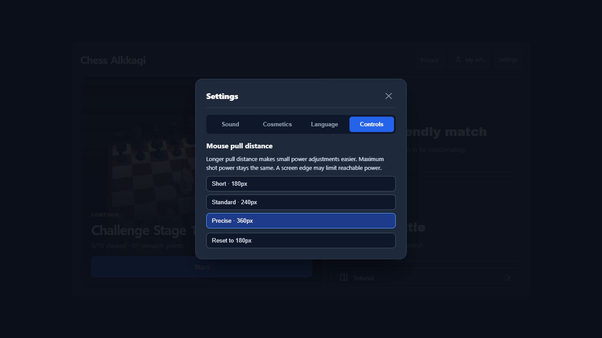
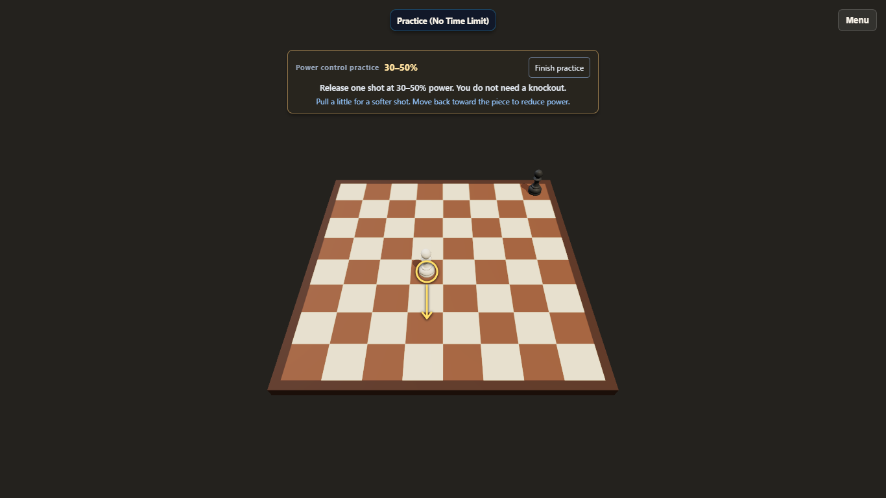
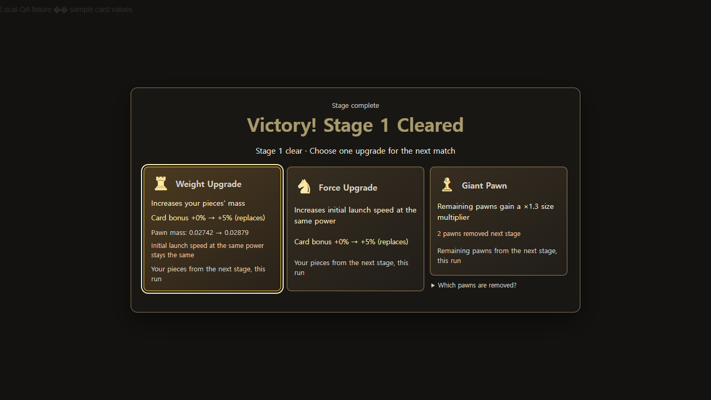
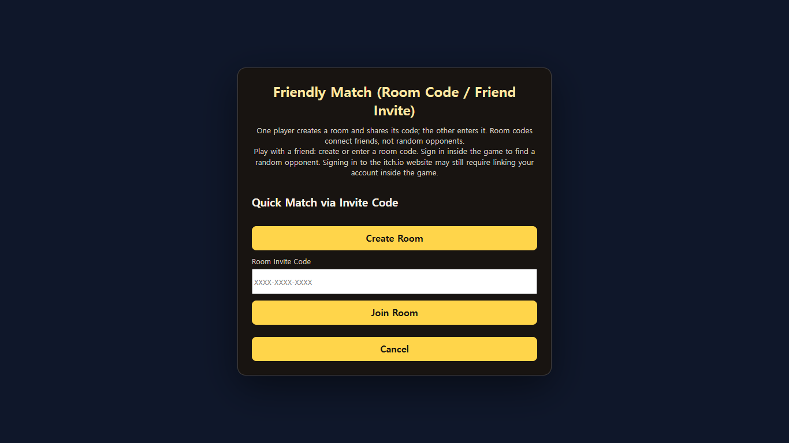

체스 알까기 피드백 개선 기획 화면 자료
2026-11-12 · 제안 v1.1 · 게임 구현 및 새 실행 결과가 아닌 개발용 화면 계약
실제 제보, 과거 로컬 QA 캡처, 이번에 작성한 제안 와이어프레임을 구분합니다. WF 화면은 기능·영역 순서를 설명하는 구조안이며 원본 시안 재현이나 실제 물리·온라인 동작을 주장하지 않습니다.
| 구분 | 보여주는 것 | 사용 기준 |
|---|---|---|
| REF-01~02 | 제보 상황 / 타 게임 참고 | 문제 발견·아이디어 근거. 미래 목표 화면 아님. |
| REF-03~06 | 기존 로컬 화면 / 카드 예시 | 기존 구조·정보 순서 보존. 새 빌드와의 일치는 재검증. |
| WF-01~03 | 당김 여백 / 특성 안내 / 경로 분기 | 모든 좌표·간격은 추정. 구현 시 실제 화면과 함께 조정. |
WF-01 당겨서 놓기를 유지하는 가장자리 개선
신규 제안 · 추론 와이어프레임 — v1.1: 별도 파워 슬라이더·발사 버튼을 제외한다. 보드 여백·카메라 구도를 먼저 조정하고 필요하면 화면별 실제 당김 거리를 조정한다. 같은 화면·입력·프리셋에서 위치·방향과 무관한 감도이며 드래그 중에는 고정한다. 점선·거리선·주석은 설명용이며 실측값이 아니다.

WF-02 기물 특성의 발견성
신규 제안 · 추론 와이어프레임 — 새 능력 대신 기존 룩의 조건부 상한을 보여주는 예시. 실제 보드·기물 아트의 대체안이 아니며 모드별 제한을 그대로 반영한다.

WF-03 온라인 경로 정보 구조
신규 제안 · 추론 와이어프레임 — 계정 상태별 두 분기를 나란히 보인 설명도. 새 대시보드 레이아웃이나 실제 서버 상태가 아니다.

REF-01 실제 플레이어 제보 · S02
참조 · 원본 보존 — 995×555 raster. 크롭·viewport·DPR 미상. 원인이나 전체 제스처를 증명하지 않는다.

REF-02 다른 게임의 힘 표시 참고
참조 · 원본 보존 — 1433×745 raster. 세기와 표시 길이의 관계만 참고. Chess Alkkagi 실행 증거가 아니다.

REF-03 11/11 과거 로컬 Controls 캡처
참조 · 원본 보존 — 1366×768. 기본값 180px, 선택값 360px인 상태. 새 빌드의 재검증 결과가 아니다.

REF-04 11/11 과거 로컬 파워 연습
참조 · 원본 보존 — 1366×768. 상단 선택형 안내·보드·메뉴 구조의 기준.

REF-05 11/11 카드 컴포넌트 QA 페이지
참조 · 원본 보존 — 1366×768. 예시 카드 값. 실제 경기 보상 기록이 아니다.

REF-06 11/11 과거 로컬 게스트 안내
참조 · 원본 보존 — 1366×768. 기존 방 생성·코드·참여·취소 순서의 기준.

검증 기록의 경계
이 자료의 이미지 열람·문서 렌더링은 실제 게임 기능이나 새 빌드의 시각적 일치를 증명하지 않습니다. 구현 후 동일 viewport, 확대, 언어, 기물·파워·상태를 맞춘 캡처와 기능 결과를 별도로 남깁니다. 모바일·작은 iframe의 신규 배치는 추론한 변형입니다.